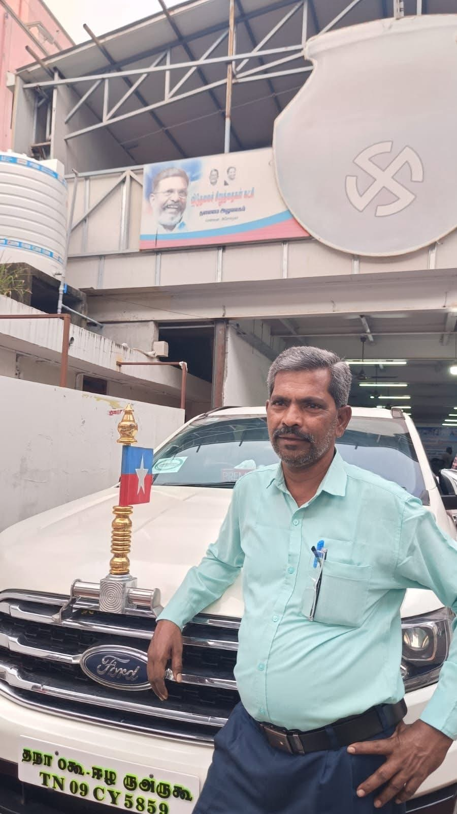
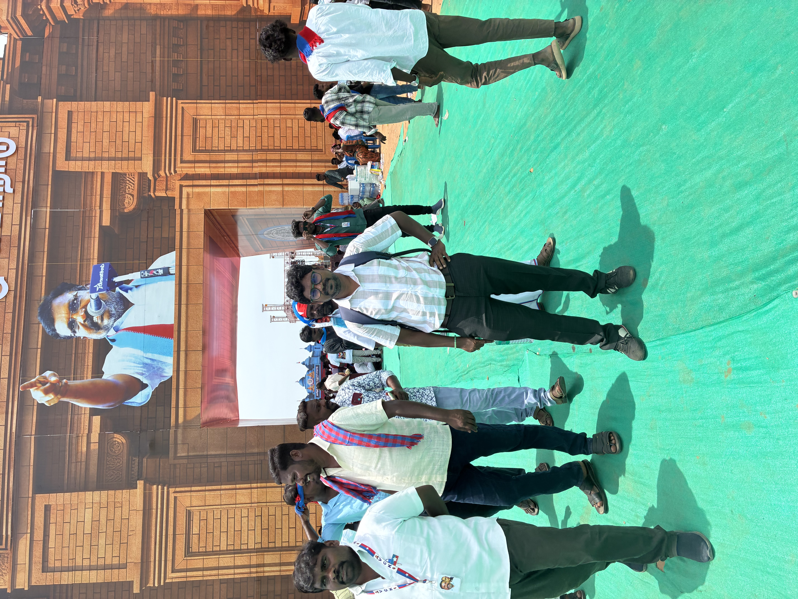
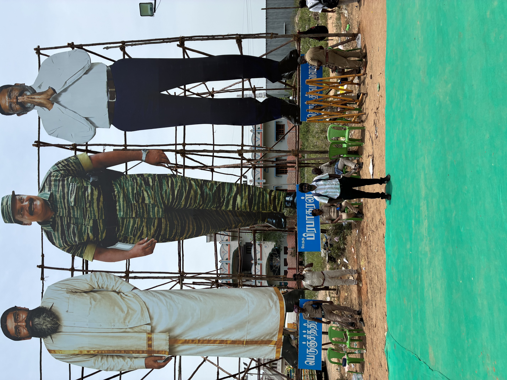
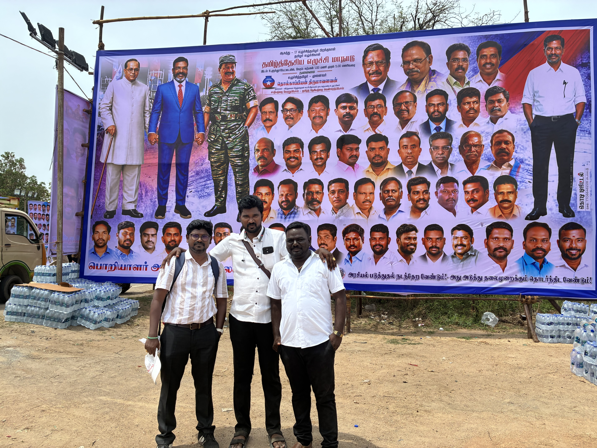
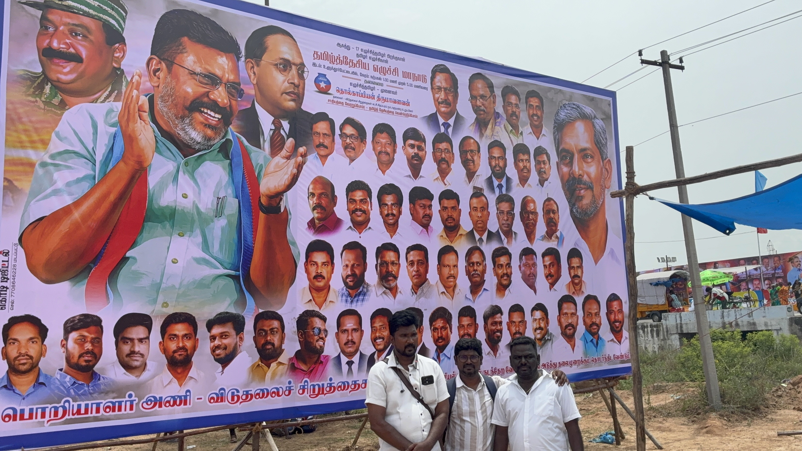
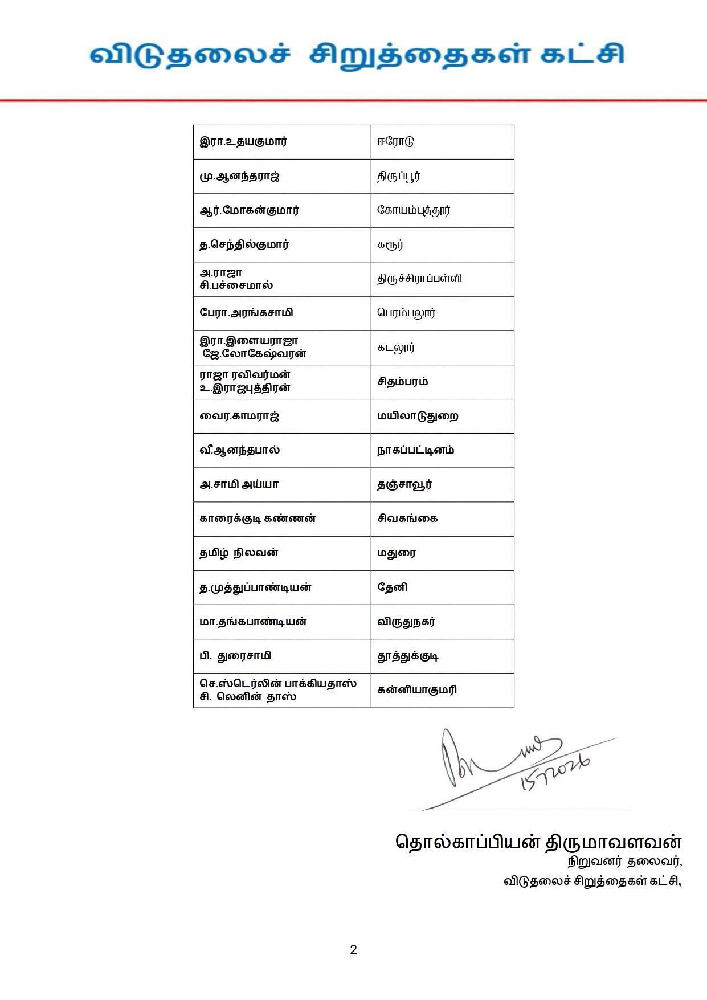
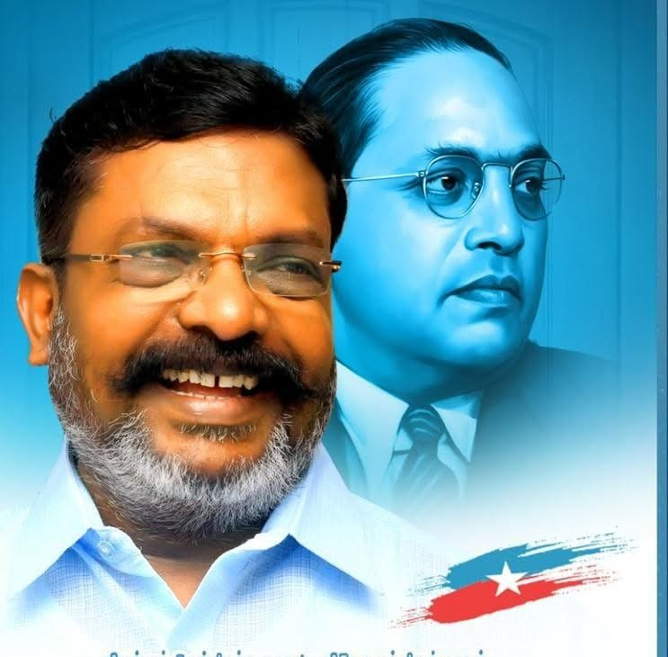

நிகழ்வுகள் & புகைப்படங்கள்
பொறியாளர் அணியின் நிகழ்வுகள், சந்திப்புகள் மற்றும் செயல்பாடுகள்.







பொறியாளர்கள், தொழில்நுட்ப வல்லுநர்கள் மற்றும் இளம் திறமைகளை ஒருங்கிணைத்து சமூக முன்னேற்றத்திற்கும் மக்கள் நலனுக்கும் தொழில்நுட்பத்தைப் பயன்படுத்தும் பொறுப்பான தளம்.
அறிவு • ஒருங்கிணைப்பு • தொழில்நுட்பம் • சமூகப் பொறுப்பு
சமூக நீதி மற்றும் சமத்துவம்
தரமான செயல்திட்டம் மற்றும் ஒருங்கிணைப்பு
அறிவியல் மற்றும் நவீன தொழில்நுட்பப் பயன்பாடு
மக்கள் நலனுக்கான செயல்பாடுகள்

சமூகநீதி, சமத்துவம், ஜனநாயகம் மற்றும் மனித உரிமைகளை முன்னிறுத்தி சமூக மாற்றத்திற்காக தொடர்ந்து குரல் கொடுக்கும் தலைமையின் வழிகாட்டுதலில், பொறியியல் துறையைச் சேர்ந்த இளைஞர்கள் மற்றும் தொழில்நுட்ப வல்லுநர்களை ஒருங்கிணைத்து சமூகப் பணியில் ஈடுபடுவதே VCK பொறியாளர் அணியின் நோக்கமாகும்.
15.07.2026 அன்று வெளியிடப்பட்ட அதிகாரப்பூர்வ அறிவிப்பின் அடிப்படையில்
பொறியாளர்கள் மற்றும் தொழில்நுட்ப வல்லுநர்களை ஒருங்கிணைத்தல்.
தொழில்நுட்ப அறிவை மக்கள் நலச் செயல்பாடுகளுடன் இணைத்தல்.
இளம் பொறியாளர்கள் மற்றும் தொழில்நுட்பத் திறமைகளை ஊக்குவித்தல்.
சமூக முன்னேற்றத்திற்கான பயனுள்ள திட்டங்களை உருவாக்குதல்.
பொறியாளர் அணியின் நிகழ்வுகள், சந்திப்புகள் மற்றும் செயல்பாடுகள்.






பொறியாளர் அணி – தலைமை அலுவலகம்
சர்வமங்களா காலனி,
அசோகா காலனி, அசோக் நகர்,
சென்னை – 600083, தமிழ்நாடு.